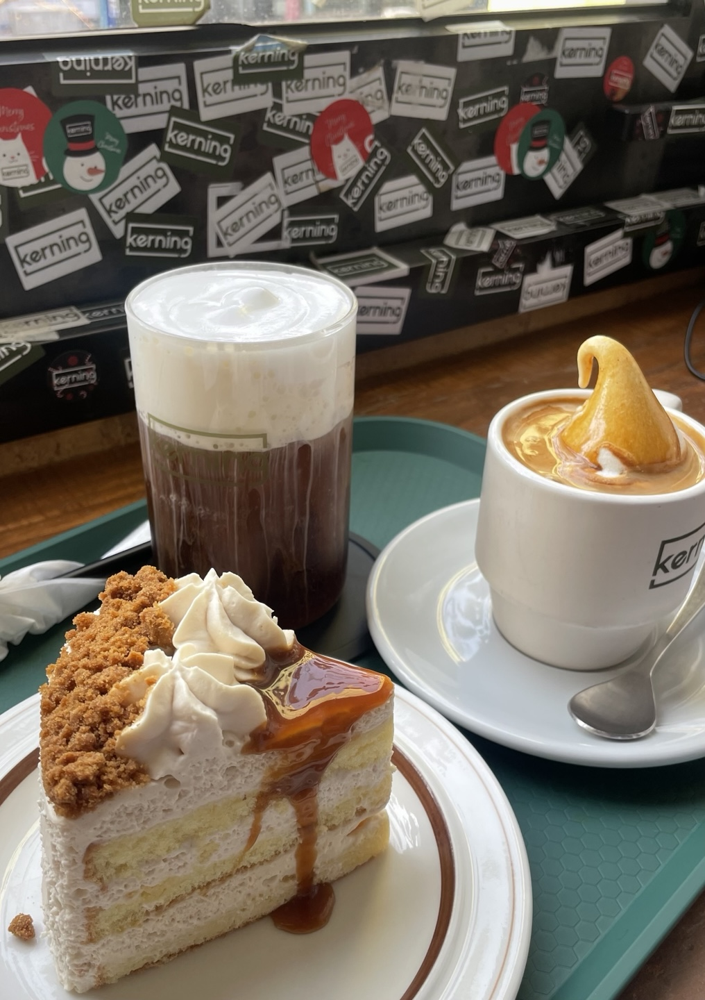

커닝
[대전]
대화하기 좋은 아늑한 분위기, 다양한 디저트의 커닝
커닝은 중앙로에 위치한 메가박스 옆에 있는 3층규모의 높지만 아늑한 카페입니다.
전체적으로 층고가 높아 답답한 느낌이 없고 조명이 은은해서 편안한 느낌을 줍니다.
특히나 디저트의 종류가 다양해서 갈 때마다 고르는 재미가 있는 카페입니다.
친구나 연인끼리 편하게 대화하고 싶을 때 방문을 추천드립니다!
커닝은 중앙로에 위치한 메가박스 옆에 있는 3층규모의 높지만 아늑한 카페입니다.
전체적으로 층고가 높아 답답한 느낌이 없고 조명이 은은해서 편안한 느낌을 줍니다.
특히나 디저트의 종류가 다양해서 갈 때마다 고르는 재미가 있는 카페입니다.
친구나 연인끼리 편하게 대화하고 싶을 때 방문을 추천드립니다!